Hai! Hari ini kamu yang menemukan
Kita menyelidiki kasus, menyortir kartu, lalu menyimpulkan aturannya sendiri. Baca halaman ini setelah kamu menyelidiki di kelas, untuk mencocokkan temuanmu. Semua kasus di sini fiktif; jangan menulis data asli siapa pun.
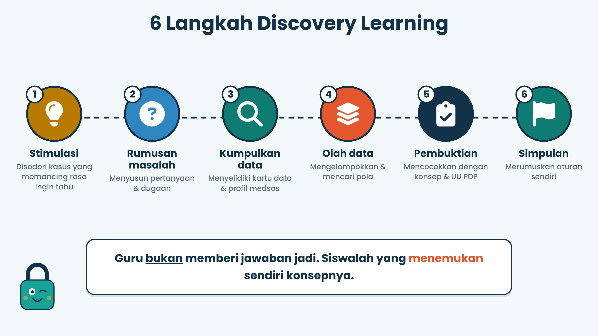
1. Cerita Rara: Kok Dia Tahu?
Rara pulang les. HP-nya bunyi: nomor asing yang tahu sekolah, kelas, dan jam pulangnya. Rara tidak pernah memberitahunya. Lalu dari mana?
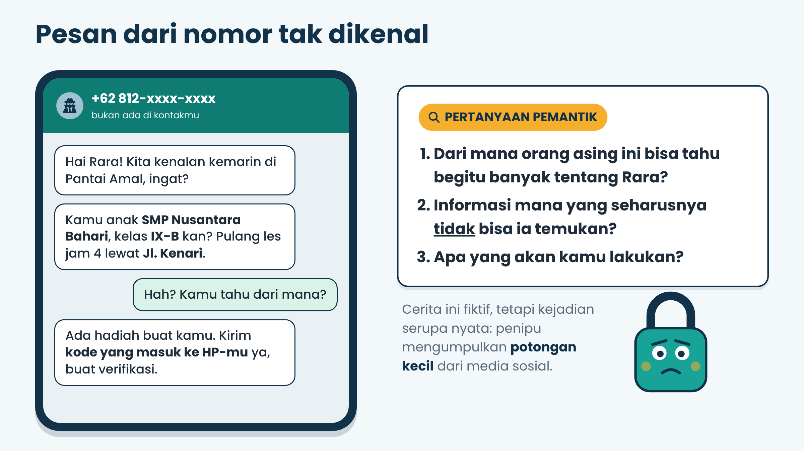
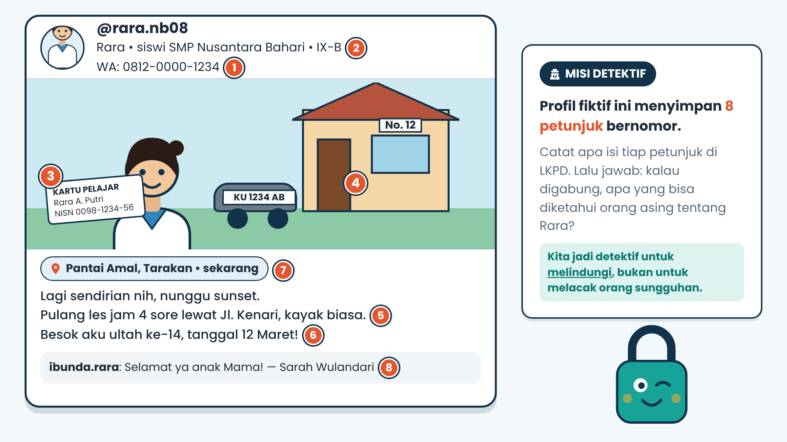
Temukan 8 petunjuk berbahaya di profil ini:
- Nomor WA tertulis di bio
Privat Dihubungi orang asing, penipuan, spam. Nomor HP cukup diberikan ke orang yang dikenal. - Nama sekolah dan kelas di bio, ditambah seragam di foto
Publik (berisiko bila digabung) Masing-masing publik, tetapi digabung menunjukkan tempat Rara berada setiap hari. - Kartu pelajar dengan NISN terlihat di foto
Privat NISN bisa disalahgunakan untuk akses atau pemalsuan data. Jangan memotret kartu identitas. - Nomor rumah dan plat motor di latar foto
Privat Lokasi rumah bisa ditemukan; plat motor mengenali kendaraan. Periksa latar sebelum unggah. - Jam pulang les dan rute (Jl. Kenari)
Privat Pola kebiasaan membuat Rara mudah dibuntuti atau dicegat. - Tanggal ulang tahun (12 Maret)
Privat Sering dipakai sebagai kata sandi atau data verifikasi akun. - Lokasi saat ini dan keterangan "sendirian"
Privat Orang asing tahu persis di mana Rara dan bahwa ia sendiri. - Nama lengkap ibu di kolom komentar
Privat Bahan modus penipuan keluarga dan jawaban pertanyaan keamanan.
2. Data dan Informasi
Data = potongan fakta mentah (angka, teks, gambar). Informasi = hasil menyusun data hingga bermakna. Seperti potongan puzzle dan gambar utuhnya.
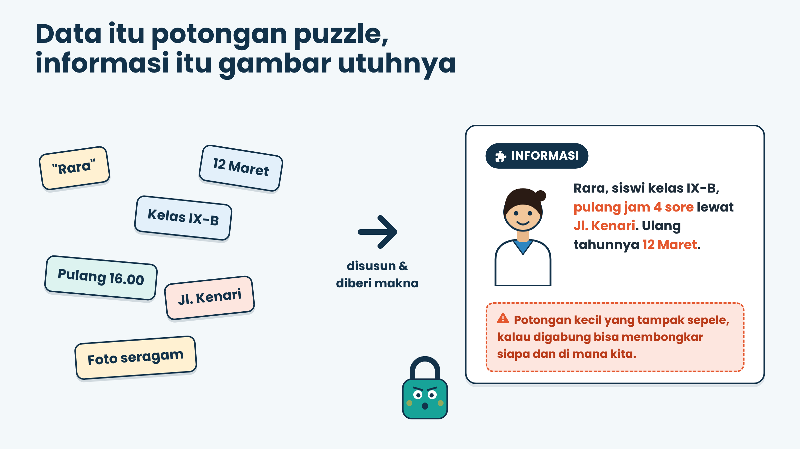
3. Dua Amplop: Publik dan Privat
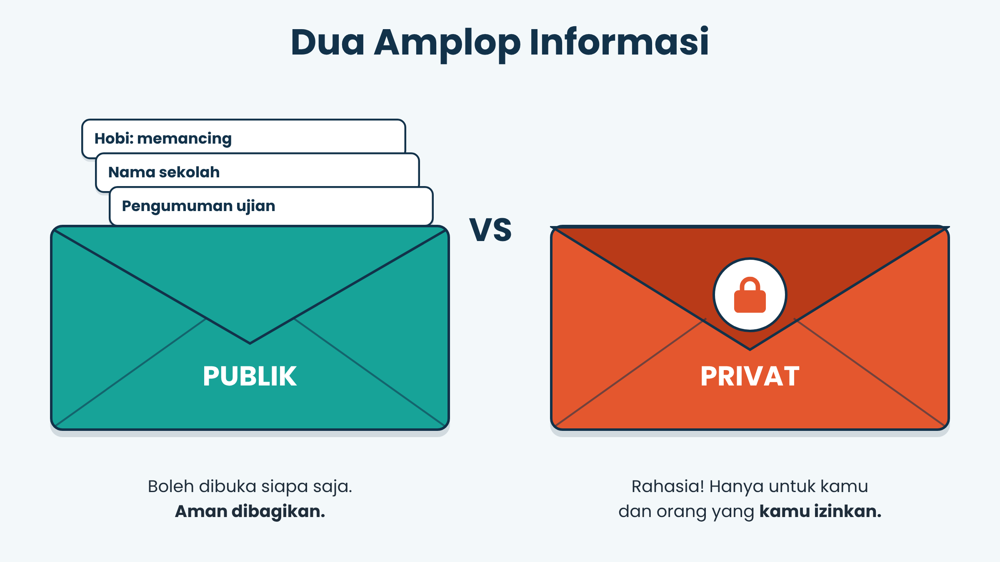
- Publik: aman dibagikan kepada khalayak umum (amplop terbuka).
- Privat: rahasia dan berpotensi disalahgunakan bila diketahui umum (amplop tertutup).
- Tergantung konteks: contohnya selfie, nomor HP sendiri, ID media sosial, foto bersama teman.
4. Coba Sendiri: Sortir Kartu!
Tentukan zona tiap kartu. Jawabanmu langsung diperiksa.
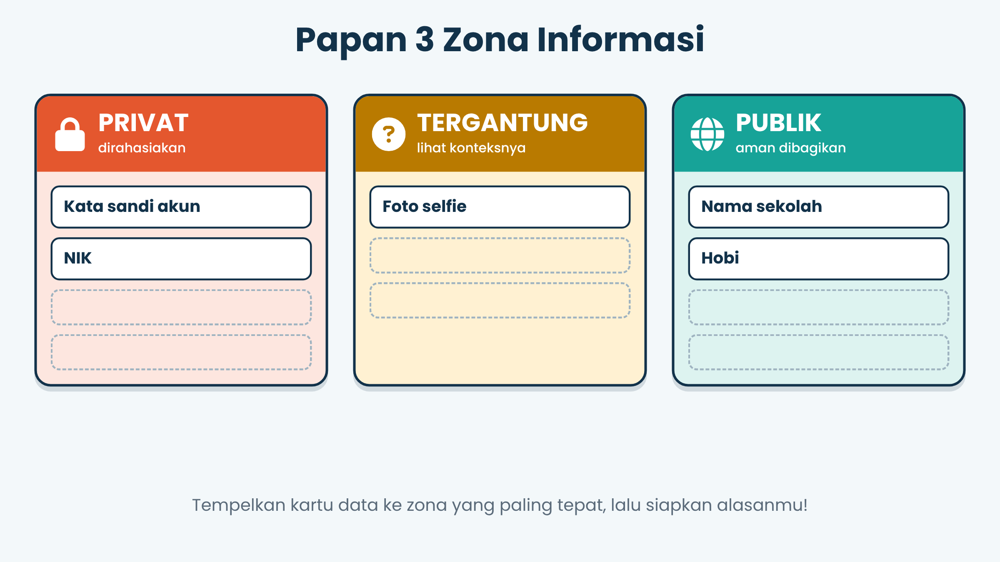
5. Data Pribadi menurut UU PDP
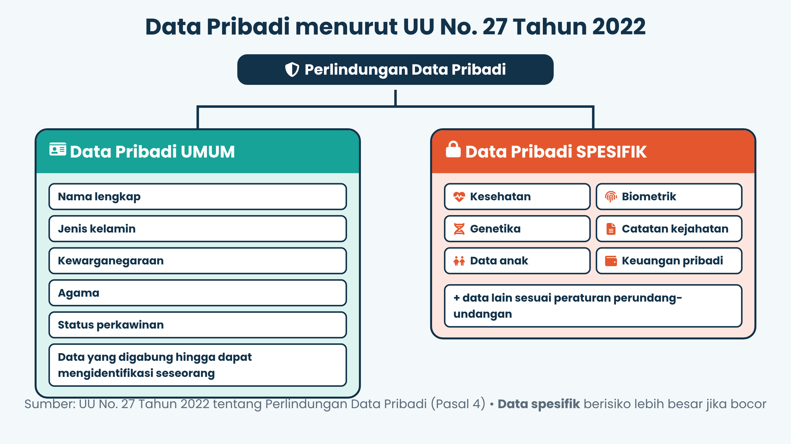
UU No. 27 Tahun 2022 membagi data pribadi menjadi umum (nama lengkap, jenis kelamin, kewarganegaraan, agama, status perkawinan) dan spesifik (kesehatan, biometrik, genetika, catatan kejahatan, data anak, keuangan pribadi). Spesifik berisiko lebih besar.
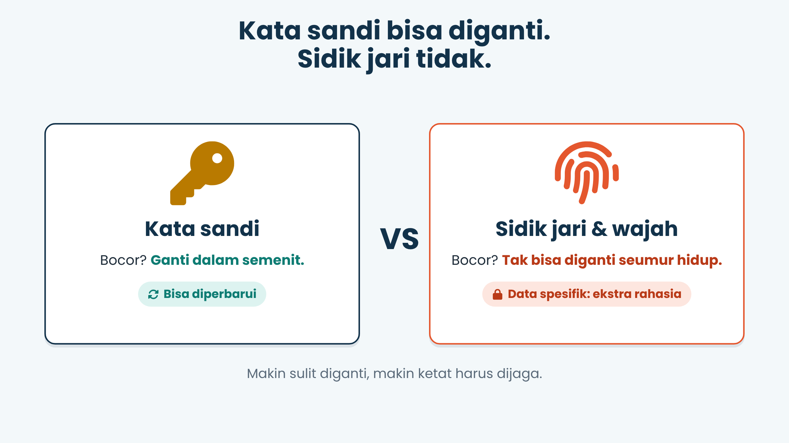
Kata sandi bocor? Ganti. Sidik jari bocor? Tidak bisa diganti. Makin sulit diganti, makin ketat dijaga.
6. Publik + Publik + Publik = ?
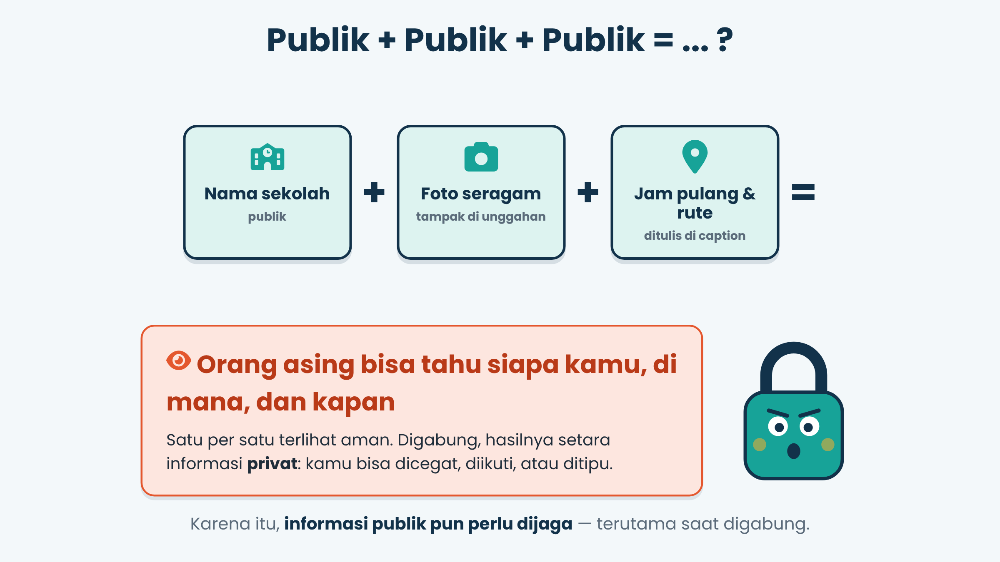
Nama sekolah, foto berseragam, dan jam pulang masing-masing tampak aman. Digabung, mereka membentuk pola. Karena itu informasi publik pun perlu dijaga.
7. Tiga Saringan
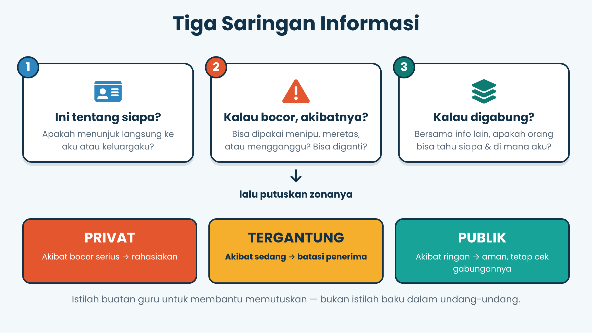
Sebelum posting: Siapa? (menunjuk ke aku?) Akibat? (bahaya bila bocor?) Gabung? (bahaya bila digabung?)
8. Menjaga Keduanya
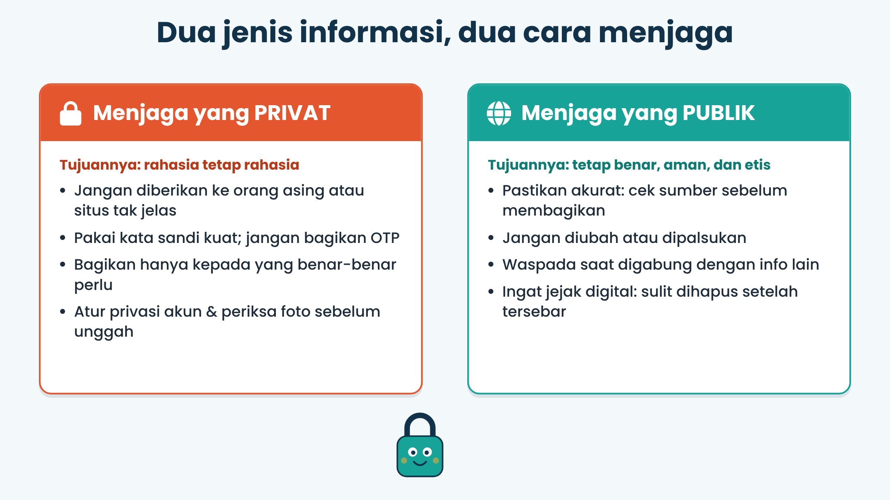
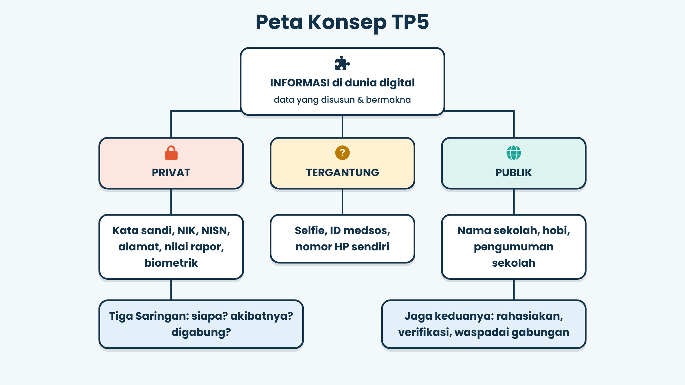
9. KUDA: Kuis Dadakan
10. Janji Digital Aman-ku
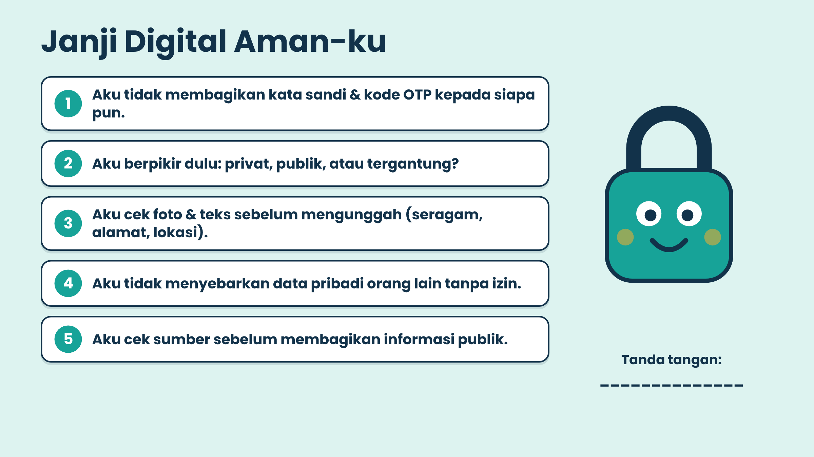